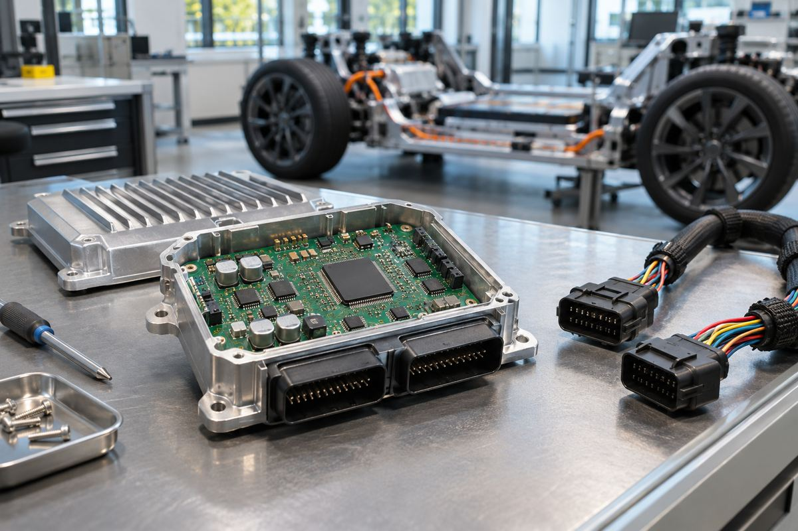

전자기기 / EXPLAINED
인피니언 AURIX RC1, 차량 제어기에 RISC-V 도입…샘플은 2027년 상반기 목표
여러 차량 기능을 공통 제어기 계열로 개발하는 구상으로, 모델별 사양과 실제 탑재는 남아 있다.

인피니언이 11월 4일 자동차와 산업 제어용 AURIX RC1을 발표했다. 자사 마이크로컨트롤러 플랫폼 중 처음으로 공개 명령어 표준 RISC-V를 활용하며, 기존 AURIX와 TRAVEO T2G의 적용 영역을 공통 제품군으로 잇겠다는 계획이다. 개념은 11월 10~13일 뮌헨 electronica에서 소개하고, 첫 샘플 공급은 2027년 상반기가 목표다. 발표와 전시, 평가용 샘플, 실제 차량 탑재는 각각 다른 단계다.
인피니언은 자동차와 산업용 반도체를 공급하는 기업이다. AURIX는 차량에서 정해진 시간 안에 센서를 읽고 제어를 수행하는 마이크로컨트롤러 계열이다. 소프트웨어 정의 차량 SDV는 소프트웨어가 기능과 업데이트에서 큰 역할을 하는 자동차를 가리킨다. 과거 기능별로 여러 곳에 나뉘던 제어를 중앙 컴퓨터와 구역 제어기에 모으는 설계가 늘면서, 같은 개발 기반을 여러 영역에 적용하는 것이 이번 플랫폼의 목표다.
구역 제어기는 차체의 특정 물리적 영역에서 센서나 구동 장치와 연결되는 역할을 한다. 같은 계열 칩을 차체, 섀시, 배터리 관리나 동력계에 맞춰 쓰면 도구와 코드를 일부 공유할 여지가 있다. 그러나 모든 역할에 동일한 칩을 쓰거나 모든 기능을 중앙 한 곳으로 옮긴다는 뜻은 아니다. 실시간 제어의 응답 시간, 통신 대역과 장애 발생 시의 동작은 각 기능별로 따져야 한다.
RISC-V는 처리기가 실행하는 명령의 공개 규격이다. 공개 표준을 사용한다는 사실과 특정 칩의 내부 설계나 개발 도구가 모두 공개된다는 것은 다르다. 인피니언은 용도에 따라 최대 12개의 32비트 처리 코어와 최대 40MB 내장 메모리, 병렬 처리 장치를 제시한다. 제품군 상한으로 읽어야 하며 모든 모델의 공통 사양은 아니다. 일부 상위 제품에 64비트 마이크로프로세서 기능을 더하는 계획도 기본 MCU 모델의 사양과 구분된다.
안전과 통신의 기준
인피니언은 자동차 기능 안전의 높은 수준인 ASIL D까지의 응용을 지원하도록 설계한다고 설명한다. 이는 안전 목표를 만족시키는 시스템 설계에 활용할 수 있다는 뜻이지, 반도체 발표만으로 완성차가 인증됐다는 뜻은 아니다. 통신에는 CAN-XL과 10BASE-T1S, 멀티기가비트 이더넷을 제시했고 일부 제품에는 스위칭과 경로 처리 가속을 넣는다. 같은 계열 이름이라도 실제 포트와 지원 기능은 제품별 문서가 필요하다.
개발 전환에는 DRIVECORE 소프트웨어 생태계를 제공하고, 가상 시제품으로 실물 칩 전에 작업을 시작할 수 있다고 밝혔다. 이전 기종의 코드가 그대로 동작한다는 보장은 아니다. 명령 체계뿐 아니라 주변 장치, 실시간 운영 환경과 안전 검증 절차도 영향을 받는다. 편집부의 해석으로는 공통 기반이 자리 잡으면 도구와 코드를 재사용할 가능성이 커지지만, 전환 비용이 실제로 얼마나 줄어드는지는 프로젝트별 검증이 필요하다.
운전자에게 이번 소식이 곧 새 기능 업데이트나 차량 판매로 이어지는 것은 아니다. 샘플 목표 이후에도 차량 업체의 평가, 설계 채택, 시험과 양산 결정이 남는다. 구체적인 모델별 가격, 전체 공급 일정, 탑재 차량과 출시일은 이번 발표로 확정되지 않았다. 현재 확인할 수 있는 변화는 공통 차량 제어 플랫폼의 방향과 시제품 목표이며, 체감 기능은 실제 제품 채택 공지가 나올 때 판단할 사안이다.